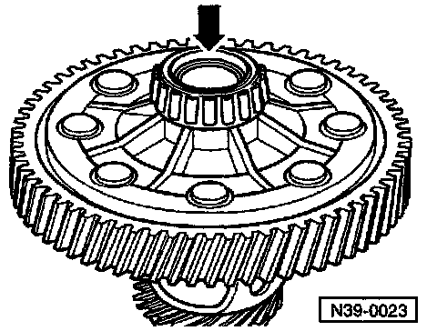
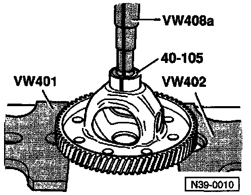
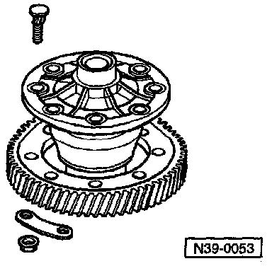
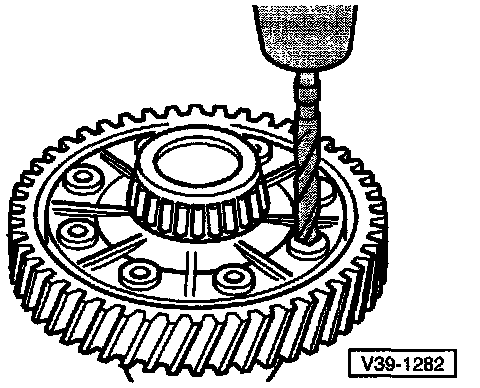
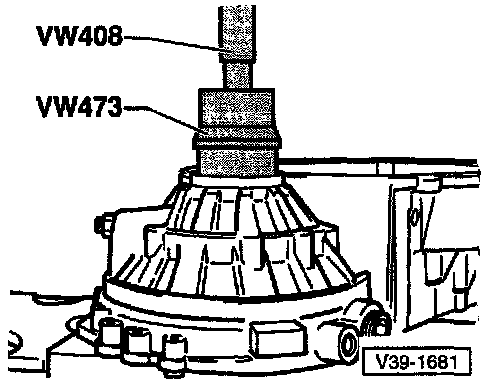
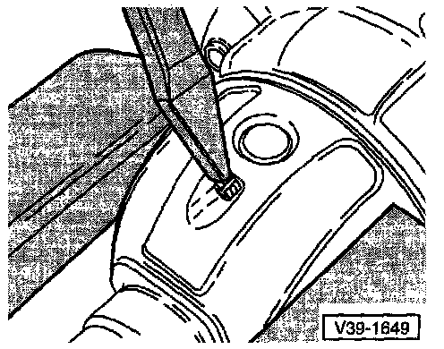
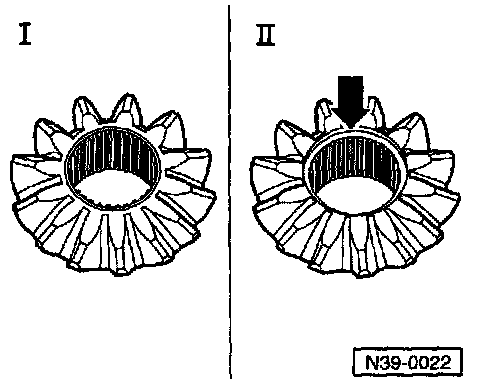
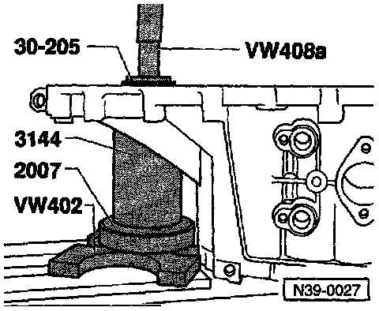

Differential: Service and Repair

1 - Flange shaft -- For transmissions without springs behind axle flanges
2 - Oil seal -- For transmissions without springs behind axle flanges
3 - Transmission housing
4 - Bolt
5 - Differential housing -- bolt to final drive gear
6 - Final drive gear -- Riveted on in production, replacement is bolted on
7 - Packing plate
8 - Nut
9 - Differential housing
10 - Speedometer drive gear
11 - Tapered roller bearing inner race
12 - Tapered roller bearing outer race
13 - Clutch housing
14 - Differential pinion gear
15 - One-piece thrust washer
16 - Differential side gear
17 - Threaded piece
18 - Differential pinion shaft
19 - Spring pin -- for securing differential pinion shaft
20 - Tapered roller bearing inner race
21 - Tapered roller bearing outer race
22 - Shim
23 - Sleeve
24 - Oil seal
25 - Circlip
26 - Tapered ring
27 - Thrust washer
28 - Spring -- installed behind axle flange
29 - Axle flange -- with drilling for cone-head bolt
30 - Cone-head bolt
COMPONENT DISASSEMBLY-IDENTIFICATION-INSPECTION PROCEDURES
NOTE: The numbers in (parentheses) below, refer to the component key for the exploded image above. The components which require additional disassembly are listed below with a following procedure. The procedures are listed in the order the components are listed, and are not intended to be a sequential disassembly/assembly procedure.
(1) Flange shaft
- Removing/Installing, for transmissions without springs behind axle flanges. Service and Repair Differential Side Seal, Manual Transmission
(2) Oil seal
- Removing/Installing, for transmissions without springs behind axle flanges. Service and Repair Differential Side Seal, Manual Transmission
(5) Differential housing
- Bolt to final drive gear
- On transmissions with springs behind axle flanges, both sides are chamfered to accept tapered ring

Both Sides Of Differential Housing Are Chamfered (arrow) To Accept Tapered Rings/springs, Ref Image
(6) Final drive gear
- Bolt to final drive gear
- On transmissions with springs behind axle flanges, both sides are chamfered to accept tapered ring (26)
- Paired with pinion (output shaft); only replace as set

Pressing Off Final Drive Gear

Heat Final Drive Gear For Installation
- Heat to 100°C (212°F)

Bolting Together Final Drive Gear And Differential Housing Use Special Bolts Part No. O2A 498 O88A With Plates And Nuts
(8) Nut
- Tightening torque: 70 Nm (52 ft lb)
(9) Differential housing
- With final drive gear (riveted on in production)

Drilling Out Rivet Heads
Bolting Together Final Drive Gear And Differential Housing Use Special Bolts Part No. O2A 498 O88A With Plates And Nuts
(11) Tapered roller bearing inner race

Pulling Off Tapered Roller Bearing Inner Race
- Before fitting the extractor, position press tool 40-105 on differential housing
NOTE: The set-up and procedure for pulling tapered roller bearing inner races off the differential housing is identical for both bearings.

Pressing On Tapered Roller Bearing Inner Race
NOTE: The tapered roller bearing inner races for transmission housing and clutch housing are pressed on with the same press tools.
(12) Tapered roller bearing outer race

Driving Tapered Roller Bearing Outer Race Out Of Clutch Housing
- First remove flange shaft seal mounting sleeve on transmissions with springs behind axle flange

Pressing Tapered Roller Bearing Outer Race Into Clutch Housing
- No shim is installed in the clutch housing end
(14) Differential pinion gear

Installing Differential Pinion Gears And Side Gears -- Transmissions WITHOUT Springs Behind Axle Flanges
- Lubricate one-piece thrust washer with transmission oil and install
- Insert pinion gears and drive in pinion gear shaft

- Drive in new spring pin
- Insert side gears, turned 180°, and pivot into position (arrow)

Installing Differential Pinion Gears And Side Gears -- Transmissions WITH Springs Behind Axle Flanges
- Lubricate one-piece thrust washer with transmission oil and install
- Install both side gears and secure (e.g. with axle flange)
- Install pinion gears, turned 180°, and pivot into position
- Push in pinion gear shaft (arrow A) as tar as first pinion gear
- Position threaded piece (arrow B) in side gears
^ Installation position: step toward sun wheel
- Drive pinion gear shaft into final position and secure with spring pin
(15) One-piece thrust washer
- Lubricate with transmission oil before installing
(16) Differential side gear

Identifying Differential Side Gears
Installing Differential Side Gear -- Ref Differential Pinion Gear Installation
(17) Threaded piece
- Installed in conjunction with springs behind axle flanges
(18) Differential pinion shaft
- Drive out using drift punch
Installing Differential Pinion Shaft -- Ref Differential Pinion Gear Installation
(19) Spring pin -- for securing differential pinion shaft
Removing Spring Pin For Differential Pinion Shaft
- Cover tapered roller bearing inner race and speedometer drive gear to avoid possible damage from metal particles
- Knock-out spring pin with chisel, inserting chisel into circumferential groove
Installing Spring Pin For Differential Pinion Shaft
- Drive fully into the differential housing
(20) Tapered roller bearing inner race
Pulling Off Tapered Roller Bearing Inner Race
- Before fitting the extractor, position press tool 40-105 on differential housing
NOTE: The set-up and procedure for pulling tapered roller bearing inner races off the differential housing is identical for both bearings.
Pressing On Tapered Roller Bearing Inner Race
NOTE: The tapered roller bearing inner races for transmission housing and clutch housing are pressed on with the same press tools.
(21) Tapered roller bearing outer race

Pulling Tapered Roller Bearing Outer Race Out Of Transmission Housing
- A = Counter support, e.g. Kukko 22/2
- B = Internal puller 46-58 mm, e.g. Kukko 2117

Pressing Tapered Roller Bearing Outer Race Into Transmission Housing
- Install shim under outer race
- Support transmission housing with sleeve 3144 directly below bearing mounting
(22) Shim
- For adjusting differential
- Determining thickness -- Ref Differential, Manual Transmission Adjustments
(23) Sleeve
- Installed in conjunction with springs behind axle flanges,
- Sleeve holds oil seal

Prying Out Sleeve With Screwdriver

Pulling In Sleeve
- A = Threaded rod from seal installer 3066 B - M12 nut with washer
- Screw threaded rod (A) into differential threaded piece
- Pull sleeve in onto stop with thrust piece 3124 by turning nut (B)
NOTE: When transmission is disassembled, press sleeve in with thrust piece 3124 onto stop.
(24) Oil seal
- Installed in conjunction with springs behind axle flanges
Replacing Oil Seal -- Ref Differential Side Seal, Manual Transmission. Service and Repair
(25) Circlip
- Installed in conjunction with springs behind axle flanges.
- Ensures that tapered ring, thrust washer and spring are held in position when axle flange is removed
(26) Tapered ring
- Installed in conjunction with springs behind axle flanges
- With grooves to secure thrust washer
- Installation position: taper toward differential housing
(27) Thrust washer
- Installed in conjunction with springs behind axle flanges
- Installation position: shoulder toward spring, tongue to tapered ring
(29) Axle flange -- with drilling for cone-head bolt
- Installed on Transmissions with springs behind axle shafts
Removing And Installing -- Ref Differential Side Seal, Manual Transmission Service and Repair
(30) Cone-head bolt
- Installed in conjunction with springs behind axle flanges
- Bolt into threaded piece (17)